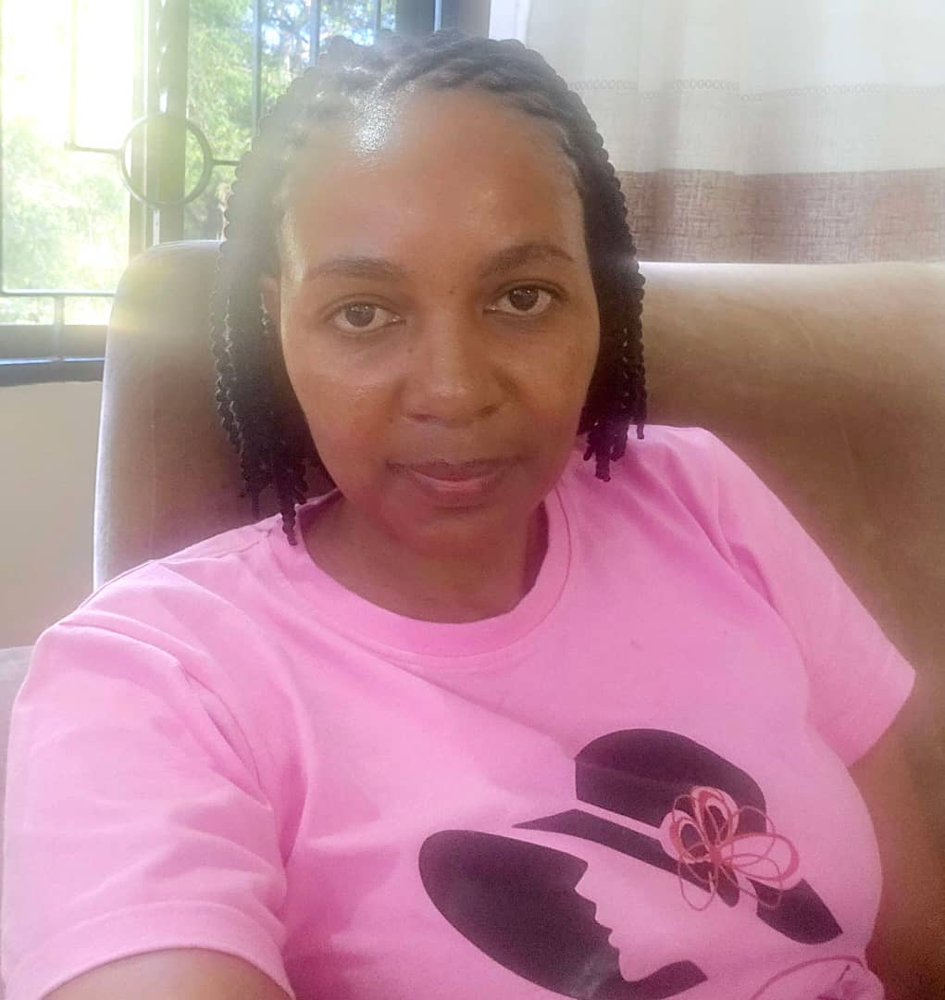

Editha's Resume

Summary or objective statement
I have an extensive experience in Maintaining the ICT infrastructure such as Local Area Networks (LAN), CISCO routing, and Switching configuration and maintenance. Maintaining and Updating the University Website.
I also provide teaching support in ICT-related courses in various academic departments and delivers ICT Services to the General Public through short courses such as Basic Computer, Computer Maintenance, and network, Geographical Information Systems (GIS), and Remote sensing and Computer Aided Designs (CAD), SPSS, etc
Education
- From September 2008 to March 2010: Masters of Science in Geoinformatics at University of Twenty (ITC) – The Netherlands, specialised in Spatial Temporal Dynamics in Disease data
- From 2002 to 2005: Bachelor of Science in Computer Science at the University of Dar es Salaam (UDSM)
Work experience
- 1st July 2010 to Date: Senior Computer System Analysts at Ardhi University, Dar es Salaam, Tanzania.
- 1st April 2008 to 30th June 2010: Computer System Analysts, at Ardhi University, Dar es Salaam, Tanzania.
- 1st March 2006 to 31st March 2008: Documentation and information technology Officer at Mediterranean Shipping Company Tanzania Limited (MSC)
Skills
Awards
- From July 2020 to June 2021: CISCO Certified Network FULL Course Switching, Routing, and Wireless Essentials (CCNAv7) at the University of Computing Center(UCC) Dar es salaam, Tanzania
- From April 2015 to May 2016: Diploma of International training programme on “ICT and Pedagogical Development in Karlstad and Stockholm University in Sweden
- From February to May 2014: Certificate on specialized programme on application development using GIS & Remote Sensing at the Centre for Development of Advanced Computing (CDAC) – India (Noida)
Other